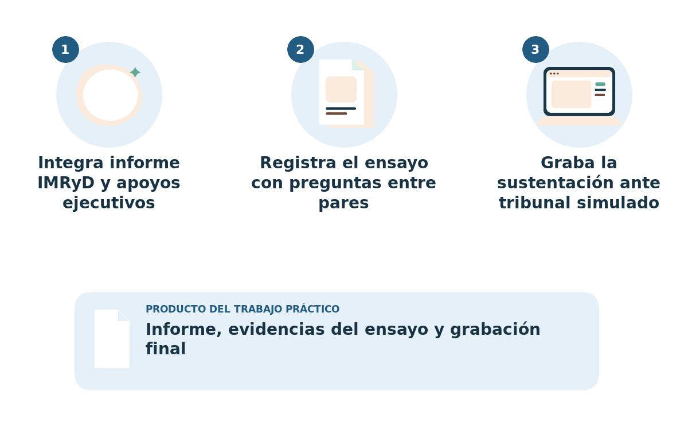

<div style="font-family: 'Segoe UI', Arial, sans-serif; color: #333; line-height: 1.6; max-width: 100%; margin-bottom: 20px;">
  <div style="background-color: #ffffff; background-image: linear-gradient(135deg, #ffffff 0%, #f8f9fa 100%); border: 1px solid #dee2e6; border-radius: 15px; padding: 25px 30px; box-shadow: 0 4px 12px rgba(0,0,0,0.05); position: relative; overflow: hidden;">
    <div style="position: absolute; left: 0; top: 0; bottom: 0; width: 6px; background: #0056b3;" aria-hidden="true"> </div>
    <div style="position: relative; z-index: 1;">
<h2 style="color: #1c3055; margin-top: 0; font-size: 1.4rem; font-weight: bold;">Entrega del Trabajo Práctico-Experimental de la Unidad 4</h2>
<p></p>

<p><strong>Asignatura:</strong> Trabajo de Integración Curricular<br>
<strong>Actividad: Informe final y presentación del proyecto</strong><br><strong>Evidencia:</strong> Un informe con sus anexos, una presentación de 8 a 10 diapositivas y una exposición grabada de 5 a 8 minutos.</p>
<p>Reúne las versiones corregidas de las unidades 1, 2 y 3. El informe y la presentación deben mostrar lo que hiciste y mediste. No presentes proyecciones o resultados del ejemplo como logros propios.</p>
<p><strong>Qué completar</strong></p>
<ol><li>Arma el informe en la plantilla del aula: portada, resumen, introducción, métodos, resultados y discusión. Integra problema, objetivos, lecturas, plan, herramientas, evidencias, conclusiones y recomendaciones.</li><li>Comprueba que cada conclusión responda a un objetivo y a datos ya presentados. Revisa las citas y referencias e incluye la declaración de autoría y de las herramientas de apoyo usadas.</li><li>Prepara entre 8 y 10 diapositivas con problema, objetivos, método, herramientas, pruebas, comparación de resultados, conclusiones y recomendaciones. Usa poco texto y gráficos legibles.</li><li>Comparte el borrador en el espacio del aula. Formula dos preguntas técnicas a un compañero y responde por escrito las dos observaciones recibidas. Si el docente autorizó trabajo individual, realiza la revisión argumentada indicada.</li><li>Graba una exposición de 5 a 8 minutos en audio o video. Explica las diapositivas, los resultados, sus límites y las respuestas a las preguntas del ensayo.</li><li>Comprueba que el informe, las diapositivas y la grabación abran sin permisos privados. Reúne todo en una entrega y explica qué observación te ayudó a mejorar la presentación.</li></ol>
<p><strong>Cómo entregar</strong></p>
<p>Entrega tu trabajo una sola vez al cierre de la semana 8. En esta Tarea de Moodle, selecciona <strong>Agregar entrega</strong>, adjunta tu evidencia y pulsa <strong>Guardar cambios</strong>. Si aparece <strong>Enviar tarea</strong>, púlsalo y comprueba el estado.</p>
<p><strong>Nombre del expediente:</strong> Apellido_Nombre_Trabajo_experimental_Unidad_4.</p>
<p><strong>Formato:</strong> Entrega el informe, los anexos, las diapositivas y el archivo o enlace accesible de la exposición grabada.</p>
<p>Conserva el registro original del caso y anota las correcciones en tu expediente. Entrega el trabajo autónomo por separado.</p>
<details><summary style="color:#0056b3;font-weight:bold;cursor:pointer;">Rúbrica de la práctica · 16 puntos</summary><div style="overflow-x:auto;"><table class="table" style="width:100%;border-collapse:collapse;font-size:.9rem;"><thead><tr><th scope="col" style="padding:8px;background:#eef4fb;text-align:left;">Criterio y puntaje máximo</th><th scope="col" style="padding:8px;background:#eef4fb;text-align:left;">Completo (4 puntos · 100 %)</th><th scope="col" style="padding:8px;background:#eef4fb;text-align:left;">Adecuado (3 puntos · 75 %)</th><th scope="col" style="padding:8px;background:#eef4fb;text-align:left;">Parcial (2 puntos · 50 %)</th><th scope="col" style="padding:8px;background:#eef4fb;text-align:left;">Inicial (1 punto · 25 %)</th><th scope="col" style="padding:8px;background:#eef4fb;text-align:left;">Ausencia (0 puntos · 0 %)</th></tr></thead><tbody><tr><td style="padding:8px;border-bottom:1px solid #dee2e6;vertical-align:top;">1. Pertinencia del análisis <strong>(4 puntos)</strong></td><td style="padding:8px;border-bottom:1px solid #dee2e6;vertical-align:top;">Relaciona problema, método, resultados y conclusiones, sin presentar como logros datos que no midió.</td><td style="padding:8px;border-bottom:1px solid #dee2e6;vertical-align:top;">Mantiene buena coherencia entre objetivos, resultados y conclusiones con precisiones menores pendientes en limitaciones o discusión.</td><td style="padding:8px;border-bottom:1px solid #dee2e6;vertical-align:top;">Presenta conclusiones desconectadas de los datos de la Práctica 3 o presenta proyecciones futuras como resultados ya logrados.</td><td style="padding:8px;border-bottom:1px solid #dee2e6;vertical-align:top;">Hay un intento evaluable. Carece de correspondencia entre objetivos, ejecución y conclusiones o presenta resultados sin datos que los respalden.</td><td style="padding:8px;border-bottom:1px solid #dee2e6;vertical-align:top;">No presenta evidencia del criterio «Pertinencia del análisis» que permita evaluarlo.</td></tr><tr><td style="padding:8px;border-bottom:1px solid #dee2e6;vertical-align:top;">2. Aplicación conceptual <strong>(4 puntos)</strong></td><td style="padding:8px;border-bottom:1px solid #dee2e6;vertical-align:top;">Completa las secciones del informe, registra las preguntas entre compañeros y presenta una exposición clara y fundamentada.</td><td style="padding:8px;border-bottom:1px solid #dee2e6;vertical-align:top;">Cumple la estructura solicitada del informe y la sustentación grabada con detalles menores de profundidad en la discusión o respuesta a réplicas.</td><td style="padding:8px;border-bottom:1px solid #dee2e6;vertical-align:top;">Omite el intercambio colaborativo de preguntas o presenta una defensa grabada incompleta que no justifica las decisiones técnicas.</td><td style="padding:8px;border-bottom:1px solid #dee2e6;vertical-align:top;">Hay un intento evaluable. No presenta sustentación asincrónica grabada o incumple gravemente la estructura solicitada del informe final.</td><td style="padding:8px;border-bottom:1px solid #dee2e6;vertical-align:top;">No presenta evidencia del criterio «Aplicación conceptual» que permita evaluarlo.</td></tr><tr><td style="padding:8px;border-bottom:1px solid #dee2e6;vertical-align:top;">3. Calidad del entregable <strong>(4 puntos)</strong></td><td style="padding:8px;border-bottom:1px solid #dee2e6;vertical-align:top;">Entrega en un único envío el informe completo, diapositivas sintéticas, acceso funcional sin bloqueos a la grabación y anexos ordenados.</td><td style="padding:8px;border-bottom:1px solid #dee2e6;vertical-align:top;">Entrega todos los productos con leves desajustes visuales en diapositivas o formato menor en anexos.</td><td style="padding:8px;border-bottom:1px solid #dee2e6;vertical-align:top;">Incluye enlaces privados inaccesibles, láminas sobrecargadas de texto o un expediente desordenado.</td><td style="padding:8px;border-bottom:1px solid #dee2e6;vertical-align:top;">Hay un intento evaluable. Entrega archivos incompletos sin presentación ejecutiva, sin grabación reproducible o sin informe completo.</td><td style="padding:8px;border-bottom:1px solid #dee2e6;vertical-align:top;">No presenta evidencia del criterio «Calidad del entregable» que permita evaluarlo.</td></tr><tr><td style="padding:8px;border-bottom:1px solid #dee2e6;vertical-align:top;">4. Uso de fuentes y referencias <strong>(4 puntos)</strong></td><td style="padding:8px;border-bottom:1px solid #dee2e6;vertical-align:top;">Aplica sin fallos el formato de citas de la guía con total correspondencia entre citas y referencias y presenta declaración formal de autoría y transparencia.</td><td style="padding:8px;border-bottom:1px solid #dee2e6;vertical-align:top;">Aplica correctamente el formato de citas de la guía y declaración de autoría con errores menores de puntuación en la lista bibliográfica.</td><td style="padding:8px;border-bottom:1px solid #dee2e6;vertical-align:top;">Presenta desacuerdos frecuentes entre citas y referencias o una declaración de autoría y uso de asistentes digitales incompleta.</td><td style="padding:8px;border-bottom:1px solid #dee2e6;vertical-align:top;">Hay un intento evaluable. Presenta referencias inventadas, plagia fragmentos o falsifica resultados o fuentes en el informe de titulación.</td><td style="padding:8px;border-bottom:1px solid #dee2e6;vertical-align:top;">No presenta evidencia del criterio «Uso de fuentes y referencias» que permita evaluarlo.</td></tr></tbody></table></div></details>
    </div>
  </div>
</div>

